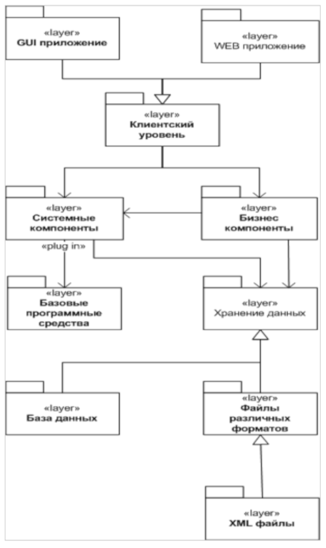
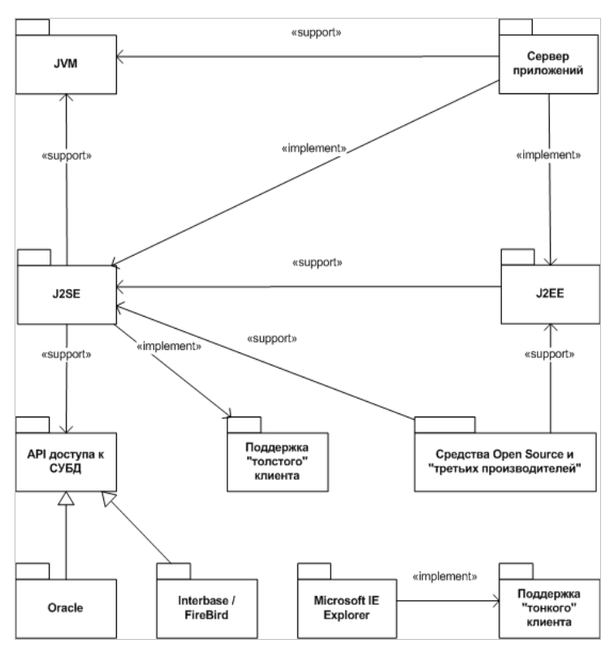
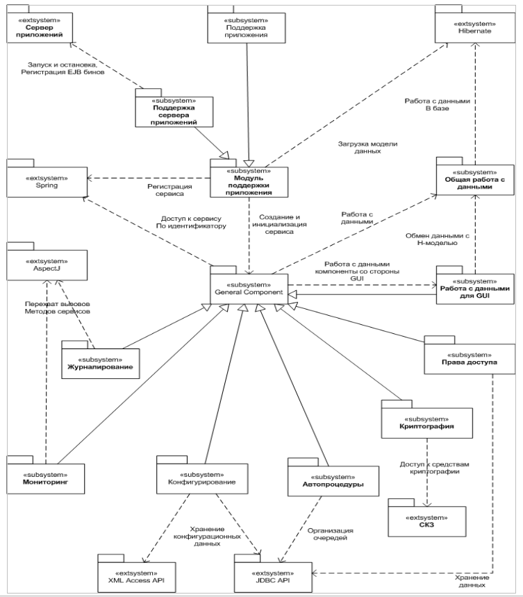

|
Защищенный электронный документооборот для
Федерального Казначейства РФ
|
|
Системная архитектура
Общее строение
Общее построение системной архитектуры описывается общепринятым для приложений уровня предприятий шаблоном многоуровневой организации. В составе архитектуры можно выделить следующие основные уровни:
- Клиентский уровень – уровень, реализующий конечные интерфейсы для работы пользователей с системой двух типов:
- WEB приложение или «тонкий» интерфейс
- GUI приложение или «толстый» интерфейс
Модули, входящие в состав данного уровня ответственны за представление информации пользователю и обработку последовательности его действий
- Бизнес компоненты – на данном уровне локализованы все компоненты, в составе которых реализуется общая бизнес логика системы (прикладная логика).
- Системные компоненты – данный уровень представляет инфраструктуру для построения, конфигурирования, управления и обеспечения взаимодействия бизнес компонент. На данный уровень вынесены общие системные средства, совместно используемые модулями всех остальных вышележащих уровней системы. Основная функция данного уровня – изоляция системы от специфики базовых программных средств.
- Базовые программные средства – на данном уровне представлены все модули, представляющие системе сервисы в контексте основных базовых технологий. Примерами таких сервисов может служить J2EE, взаимодействие XML и RDBMS, Spring и так далее.
- Работа с данными – данный уровень представлен моделью данных системы, хранение которых осуществляет в виде внешних ресурсов следующих типов
- хранится в базе данных
- в виде XML файлов
- в виде бинарных и текстовых файлов различных форматов
Данный уровень содержит как, собственно говоря, саму модель данных в виде, специфичном для каждого из типа ресурсов (схема для базы данных, DTD/Scheme для XML и так далее), так и подробности реализации этой модели для различных реализаций каждого типа ресурсов (для базы данных – реализации схема для Oracle и Interbase/FireBird)
На следующей диаграмме представлены основные архитектурные уровни системы, а также базовые взаимосвязи между ними:

Базовые программные средства
Слой базовых программных средств, в свою очередь, делится на следующие основные разделы, по числу основных используемых в реализации системы стандартных технологий:
- Виртуальная Java машина (JVM) – служит для запуска приложения целиком непосредственно (двухзвенный вариант развертывания системы) или в составе сервера приложения на сервере и клиентского приложения на клиенте (трехзвенный вариант развертывания с толстым клиентом)
- Сервер приложений – в варианте трехзвенного развертывания системы служит основным поставщиком реализаций перечисленных далее базовых программных средств. В настоящий момент в качестве сервера приложений выбран JBoss 4.0
- J2EE – включает в себя в числе прочего поддержку следующих основных используемых технологий:
- JDBC Extension 2.0
- EJB 2.1
- Servlets 2.4
- JMS 1.0
- Java Mail 1.2
- JAAS 2.0
- JAF 1.0
- J2SE – включает в себя в числе прочего поддержку следующих основных используемых технологий:
- JDBC Core API
- Reflection API
- RMI-IIOP API
- JNDI API
- Базовые программные средства Open Source и третьих производителей в следующем составе:
- Acegi Security 1.0
- Apache Ant
- Apache HTTP Server
- Apache Jakarta Utils
- Apache Digester 1.7
- Apache Xerces 1.4
- BeanShell 2.0
- Caucho Hessian XML/RPC implementation 3.0
- Dom4j 1.6
- Hibernate 3.2
- Spring 2.0
- AspectJ 1.5
- Базовые программные средства реализации пользовательского интерфейса
- Для «тонкого клиента» в основном используются технологии, реализованные в составе Microsoft Internet Explorer
- HTML 4.0
- CSS 2
- JavaScript 1.5
- DOM для Microsoft Internet Explorer 5.0 и выше
- ActiveX Microsoft - CAPI Com, XEnroll, XmlHttp
- Для «толстого клиента»
- Swing API из состава J2SE
- AWT API из состава J2SE
- API доступа к базе данных для поддержки работы JDBC, соответственно для
- Oracle
- Interbase/FireBird
Следующая диаграмма иллюстрирует вышеперечисленные пакеты и их основные взаимные зависимости:

Системные компоненты
На уровне системных компонент представлены следующие модули системы, предоставляющие основные сервисы клиентским приложениям и бизнес компонентам:
Поддержка приложения (Application Support)
Данный модуль выполняется в двух вариантах соответственно основным вариантам развертывания системы – в трехзвенном варианте (Application Server Support) и двухзвенном варианте (Application Support) и отвечает за выполнение следующих системных задач:
- Запуск и остановка приложения
- Инициализация системных и бизнес сервисов, реализуемая как последовательность следующих операций:
- Создание экземпляра сервиса
- В случае сервера приложения запуск EJB бина, выполняющего роль переходника при удаленном доступе к компоненте
- Регистрация в общем контексте, реализуемом Spring API уровня базовых программных средств. В зависимости от варианта развертывания за счет контекста маскируется тип доступа к сервисы – локальный или удаленный
- Выполнение инициализации
- Загрузка модели данных (в виде Hibernate или H-модели) в следующих разделах:
- Статическая модель, представленная HBM файлами отображения схемы базы данных на структуру POJO бинов
- Динамическая модель, представленная в виде внутренней структуры документов и словарей
Общая работа с данными (Data Access Objects, Hibernate DAO),
Данный модуль функционирует на основе загруженной H-модели данных и Hibernate API уровня базовых программных средств и отвечает за выполнение следующих задач:
- Определение множества POJO бинов, реализующих H-модель данных
- Выполнение запросов к базе на основе механизма критериев
- Сохранение изменений, вносимых в данные, представленные как POJO бины
Работа с данными со стороны пользовательского интерфейса (Value Objects Access)
Основная функция данного модуля – предоставление инструментов для пользовательского интерфейса по работе с данными, составляющими предмет обработки остальных модулей системы. Модуль отвечает за выполнение следующих системных задач:
- Определение множества POJO бинов, используемых для пересылки данных между обобщенными сервисами работы с данными и пользовательским интерфейсом (Value Objects)
- Определение процесса переноса данных между бинами H-модели и VA-объектами
- Реализация обобщенных сервисов работы с данными:
- SelectionService – сервис запроса данных
- EditObjectService – сервис редактирования данных
Мониторинг (Monitoring)
Служит для предоставления внешним средствам информации о текущем состоянии процессов в системе. Функционирование данного модуля основывается в числе прочего на AspectJ API уровня базовых программных средств, посредством которого осуществляется проксирование вызовов методов компонент со стороны других компонент и пользовательского интерфейса.
Журналирование (Logging)
Служит для обеспечения возможности накопительного сбора информации о различных событиях в системе. Функционирование данного модуля основывается в числе прочего на AspectJ API уровня базовых программных средств, посредством которого осуществляется проксирование вызовов методов компонент со стороны других компонент и пользовательского интерфейса.
Конфигурирование (Configuration)
Служит для работы с информацией, представляющей конфигурацию приложения в целом, конфигураций отдельных модулей, составляющих приложение, настроек пользователя и т.п. Функционирование данного модуля основывается в числе прочего на JDBC API, а также на средствах работы c XML файлами уровня базовых программных средств
Контроль прав доступа (Access Control)
Служит для работы с информацией, отражающей права пользовательских и системных процессов на работу с хранимыми данными и операциями по их обработке. Функционирование данного модуля основывается в числе прочего на JDBC API уровня базовых программных средств
Поддержки криптографических операций (Crypto Access)
Служит для предоставления сервисам системы доступа к средствам криптографической защиты, развернутым в составе системы.
Автопроцедуры (Auto Procedures)
Предоставляет обобщенный механизм исполнения зарегистрированных внешними модулями операций при выполнении определенного набора условий
Следующая диаграмма иллюстрирует вышеперечисленные системные компоненты и их основные взаимные зависимости. Также на диаграмме представлены ключевые зависимости от уровня базовых программных средств.

|